Què fa per tu cada part de l’app, com es fa servir i uns quants trucs per treure’n profit. El que està marcat com a Plus necessita Tiquet Plus o la seva prova de 14 dies. El que està marcat «Des de la versió 1.1» o «Des de la versió 2.0» arriba amb aquesta actualització.
Tiquet guarda el que casa teva té contractat, el que paga i el que caduca, i t’avisa abans que un termini et costi diners. No necessites compte ni connectar el banc: n’hi ha prou amb els teus papers.
No. No hi ha compte de Tiquet ni cap contrasenya per recordar.
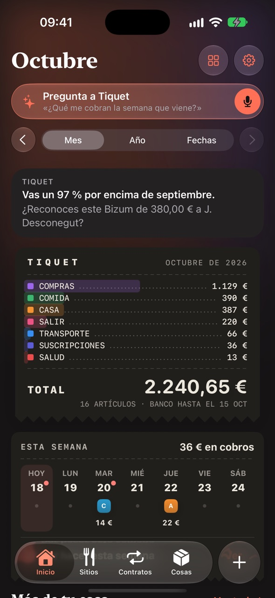
Fes una foto al tiquet o envia-li la factura que t’ha arribat per correu, i Tiquet apunta la botiga, el dia, l’import i els articles. La foto queda com a prova encara que el paper tèrmic s’esborri.
Des de la versió 1.2, cada pagament amb Apple Pay a l’iPhone o l’Apple Watch s’apunta sol a Tiquet, amb el seu comerç, el seu import i la seva categoria. Ho fa el teu iPhone, sense connectar el banc. L’iOS demana que ho activis tu, un sol cop, a l’app Dreceres: és un minut.
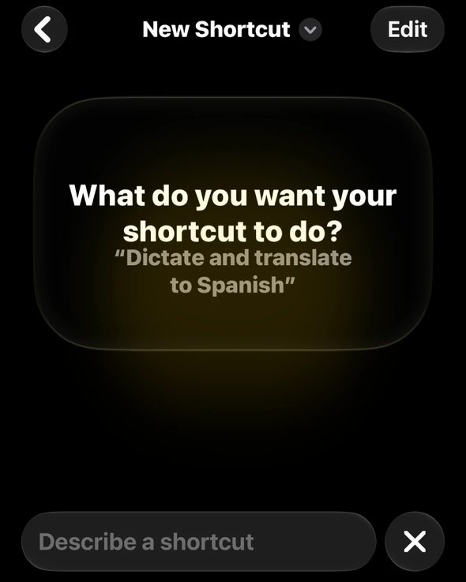
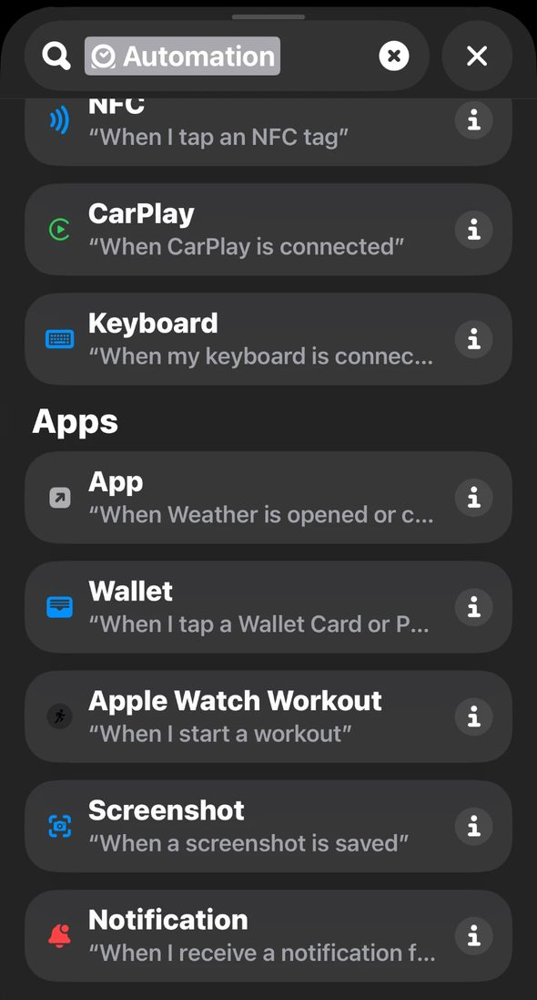
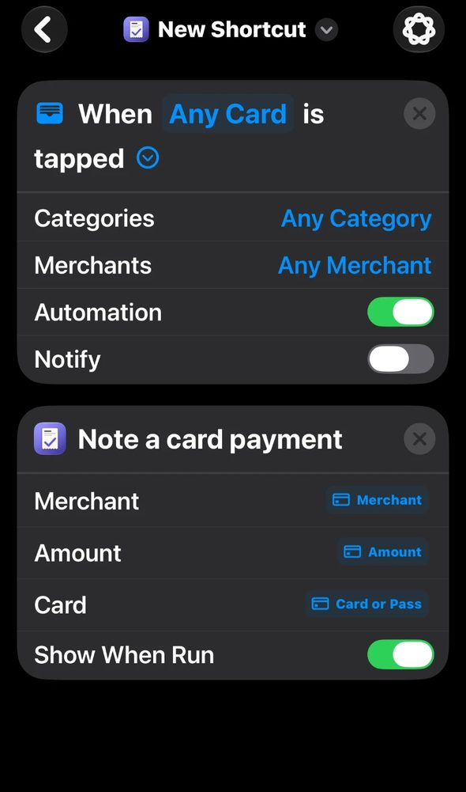
No. Dreceres li passa només el comerç, l’import i el nom de la targeta que tries a l’acció. Res no surt del teu iPhone.
L’iOS no deixa que cap app creï automatitzacions: ho ha de fer la persona, un cop. Així ho actives sabent què fas.
S’apunta el que pagues amb Apple Pay. La resta arriba amb l’extracte del banc.
Quan alguna cosa s’espatlla o no et convenç, el difícil és saber si encara hi ets a temps. Tiquet treu els terminis de devolució i de garantia del tiquet i t’avisa abans que es tanquin.
Tiquet només posa garantia quan el paper la menciona i el que s’ha comprat en pot tenir: mai al menjar, a la benzina ni a un àpat fora de casa.
Tiquet no es connecta al teu banc. Tu descarregues els moviments com a fitxer i els hi dones, i amb això veu el que pagues cada mes, el que portes pagat a cada empresa i el que es repeteix.
Gairebé tots. Tiquet busca les columnes pels títols o, si no n’hi ha, pel que contenen; entén càrrec i abonament en dues columnes i els extractes en PDF, i reconeix el format de BBVA, Banc Sabadell, ING, Revolut i Andbank. Si el teu encara no es llegeix bé, «Envia'ns la forma del fitxer» prepara un correu sense cap dada teva: cada xifra passa a ser un 9 i cada paraula, la seva llargada. Des de la 1.2 també llegeix els extractes de targeta de crèdit en PDF que parteixen un moviment en diverses línies, deixa fora el «saldo anterior» i no compta com a despesa el pagament amb què se salda la targeta.
Cada assegurança, subscripció o rebut de casa com una fitxa: el que costa, el que portes pagat, quan es renova, fins quan pots donar-lo de baixa i a qui trucar el dia que passa alguna cosa.
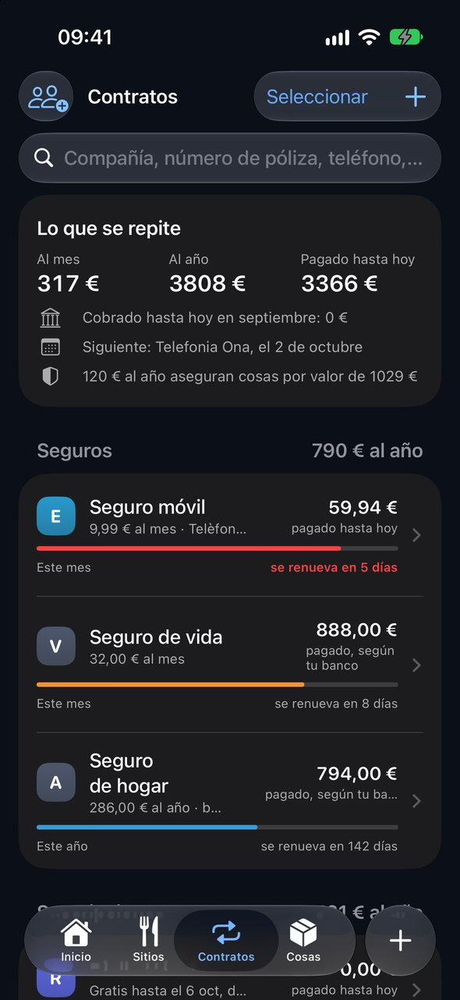
El dia que et roben o s’inunda la casa, l’asseguradora i la policia demanen el mateix: què tenies, com era i quant va costar. Tiquet ho guarda ara, cosa per cosa, a la teva pòlissa de la llar, i et prepara el PDF per lliurar-lo.
Apunta-la igualment, amb les fotos i el que vas pagar. El PDF diu quina prova hi ha de cada cosa: el tiquet, les fotos, l’etiqueta amb el número de sèrie o la garantia.
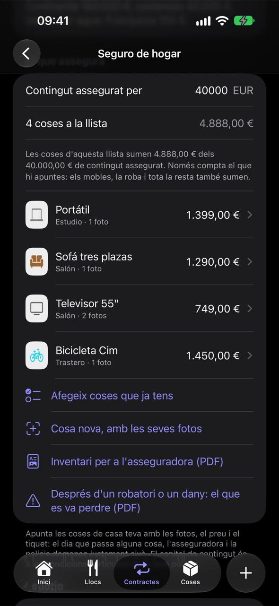
Les pujades no avisen: l’assegurança que cada any costa una mica més, la subscripció que ja no fas servir. Tiquet posa els teus propis números l’un al costat de l’altre i et diu quina pregunta fer.
Si demà no hi ets per explicar-ho, sap la teva parella quines assegurances teniu, amb qui i a quin número trucar? Tiquet prepara aquests papers ara, mentre tot va bé.
Un Bizum que no vas fer o un cobrament doble es veuen millor amb la història de casa teva al costat. Vigilància compara cada moviment dels teus extractes amb el que acostumes a fer i et pregunta si el reconeixes.
No. Només veu un moviment quan n’importes l’extracte, així que sempre arriba després. Complementa les alertes del teu banc, no les substitueix.
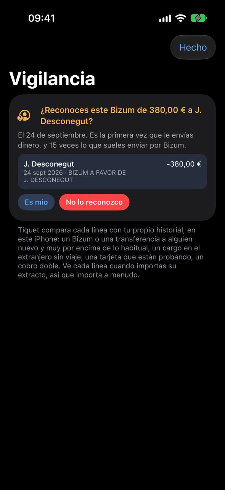
Els teus tiquets de restaurant es converteixen en el teu propi mapa: on vau menjar, què vau demanar, què us va encantar i a quin lloc tornar. Sense escriure ressenyes: el tiquet ja diu el plat i el preu.
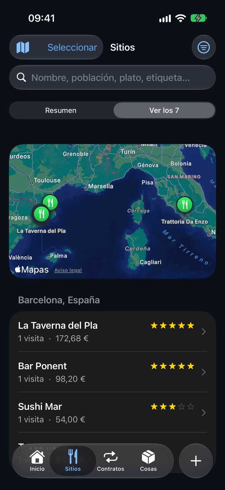
Cada tiquet del súper guarda els seus articles amb el preu. Tiquet compara el mateix a la mateixa botiga, et diu quant ha pujat la teva cistella habitual i t’ajuda a no oblidar el que et toca comprar.
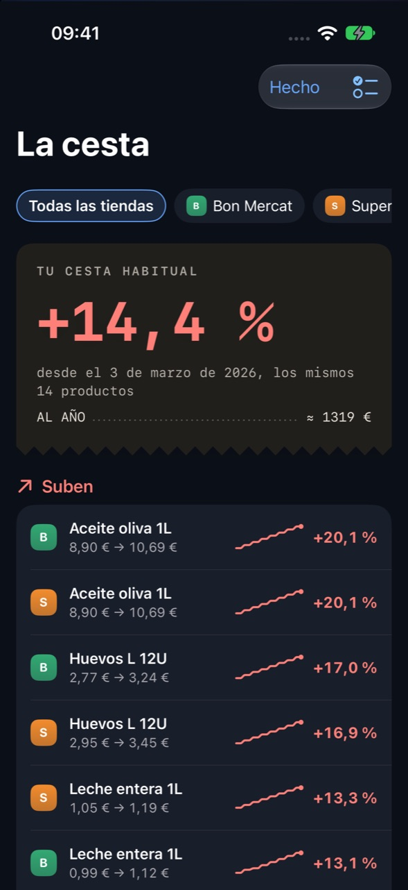
Pregunta amb les teves paraules i Tiquet respon amb els teus tiquets, extractes i contractes. Les xifres les calcula l’app; el model d’Apple només les explica, i tot passa al dispositiu.
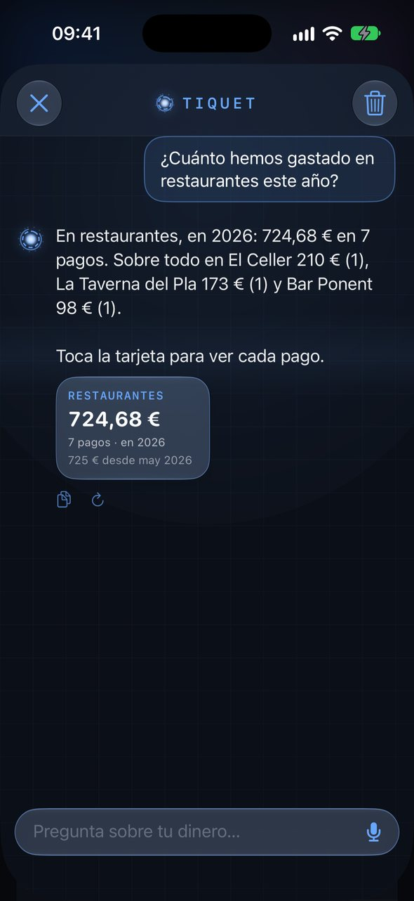
Quan obres l’app, l’«Inici» et diu si has de fer alguna cosa, com va el mes i què ve. Fora de l’app, els widgets i Siri t’ho expliquen sense haver-la d’obrir.
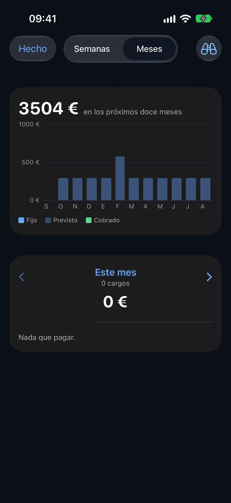
El que val la pena seguir, com el mòbil, el portàtil o la bici, i els papers que caduquen, en una pestanya. El dia que et roben alguna cosa o has de renovar el DNI, ho tens a mà.
Quant val avui el cotxe i quant t’ha costat tenir-lo? Tiquet estima el que val cada cosa, ajunta el que hi gastes i et diu des de quan mantenir-la costa més del que val.
És la que fa servir Hisenda per valorar vehicles usats en l’impost de transmissions: un percentatge del que va costar segons els anys complerts. És una referència, no una taxació.
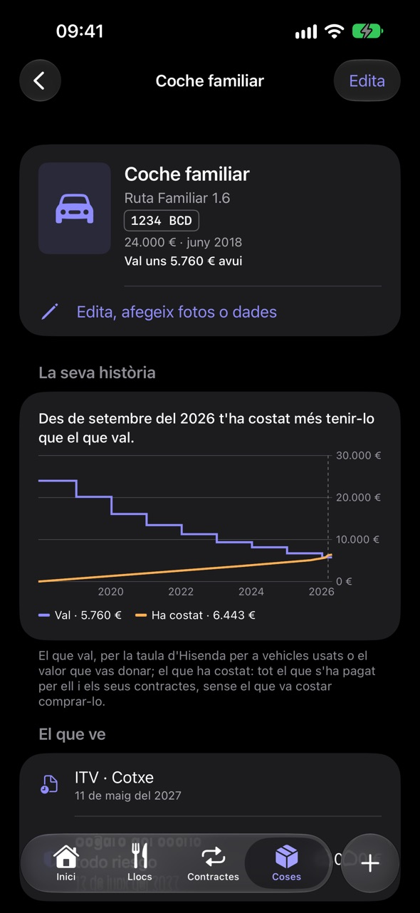
Una etiqueta ajunta el que va junt encara que arribi per camins diferents: «Viatge a Roma» suma l’hotel escanejat, el vol de l’extracte i l’assegurança de viatge. El pressupost et diu si el mes va bé.
Els teus tiquets, contractes i extractes es queden al teu dispositiu. No hi ha compte, ni connexió amb el teu banc, ni servidors nostres: no rebem ni els teus extractes ni els teus imports.
Guardar i trobar és gratis per sempre. Plus afegeix el que t’ajuda a entendre i a gastar menys, amb un sol pagament i sense subscripció.
Continues amb el que és gratis, sense cap càrrec. Els objectius que vas crear continuen a la vista i els llocs portats del banc continuen a Llocs.
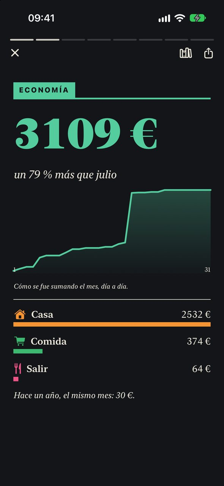
Tiquet és gratis a l’App Store d’Espanya. Si alguna cosa no funciona com esperes, o trobes a faltar una funció, escriu-nos des de la pàgina de suport.